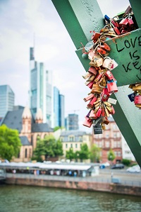

<!DOCTYPE html>
<html lang="pt">
    <head>
        <meta charset="UTF-8">
        <title>Frankfurt</title>
        <meta name="viewport" content="width=device-width,initial-scale=1.0">
        <meta name="author" content="Ângelo Bernardes">
        <meta name="keywords" content="Cidade, Frankfurt, Alemanha">
        <meta name="description" content="Website sobre Frankfurt">
        <link rel="shortcut icon" type="image/x-icon" href="images/germany.ico"/>
        <body style="background-color:#F0E68C"></body>
        <link rel="stylesheet" href="https://fonts.googleapis.com/icon?family=Material+Icons">
        <link rel="preconnect" href="https://fonts.gstatic.com">
        <link href="https://fonts.googleapis.com/css2?family=Chango&display=swap" rel="stylesheet"> 
        <link rel="stylesheet" href="estilos.css">
    </head>
    <body>
        <header>
            <center><h1>Frankfurt</h1></center>
            <figure>
                <center></center>
                <details style="text-align: center;">Foto da praça Romer, localizada em Frankfurt</details>
            </figure>
        </header>
        <nav style="text-align: center;">
            <a href="html5-css.html"><span class="material-icons md-24">settings</span>  HTML5 e CSS</a>
            <a href="quizz.html"><span class="material-icons md-24">quiz</span>Quizz</a>
            <a href="comentarios.html"><span class="material-icons md-24">feedback</span>Comentários</a>
            <a href="../index.html"><span class="material-icons md-24">home</span>Home</a>
            <a href="index.html"><span class="material-icons md-24" >star</span> Introdução</a>
            <a href="local.html"><span class="material-icons md-24">fmd_good</span>Localização</a>
            <a href="multimedia.html"><span class="material-icons md-24">image</span>Multimédia</a>
            <a href="info.html"><span class="material-icons md-24">info</span>Informação</a>
        </nav>
        <hr>
        <main>
            <h3>Localização:</h3>
            <p>Frankfurt é uma cidade da Alemanha</p>
            <iframe src="https://www.google.com/maps/embed?pb=!1m18!1m12!1m3!1d137671.5368806023!2d8.55993885090377!3d50.1213912896256!2m3!1f0!2f0!3f0!3m2!1i1024!2i768!4f13.1!3m3!1m2!1s0x47bd096f477096c5%3A0x422435029b0c600!2sFrankfurt%20am%20Main%2C%20Alemanha!5e0!3m2!1spt-PT!2spt!4v1614517053724!5m2!1spt-PT!2spt" width="600" height="450" style="border:0;" allowfullscreen="" loading="lazy"></iframe>
            <hr>
        </main>
        <aside>
            <figure style="text-align: center;">
                
                
            </figure>
            <div style="text-align: center;">
            <p>Ponte de Ferro onde os casais demonstram o seu amor ao colocar um cadeado na ponte com as iniciais. O peso dos cadeados tem abalado a estrutura.</p>
            </div>
        </aside>
        <hr>
    <footer>
        <p>Ângelo Bernardes - a21904536 - Universidade Lusófona - 2º Ano</p>
    </footer>
</body>
</html>
        